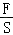

2015年北京市中考物理试题 · 选择题 第11、12、13、14、15题 · 对应解析
11．【分析】电阻大小与导体的长度、材料、横截面积和温度有关，因此在分析电阻的大小时应使用控制变量法，逐个因素进行比较。
【解答】解：A、粗细均匀的镍铬合金丝，其电阻跟该合金丝的长度有关，故A正确；
B、电阻大小与导体的长度、材料、横截面积和温度有关，因此合金丝的电阻跟合金丝的横截面积有关，故B错误；
CD、电阻是导体本身的一种属性，其大小与电压和电流的大小无关，故CD错误。
故选：A。
【点评】熟知电阻大小的影响因素，能用控制变量法正确分析电阻的变化是本题的解题关键。
12．【分析】（1）凸透镜对光有会聚作用，不仅仅是对平行光；
（2）根据光的反射定律的内容可做出判断；
（3）根据光的色散现象可做出判断；
（4）平面镜成像时，成的是正立等大的虚像。
【解答】解：A、凸透镜可以将平行于主光轴的光线会聚于一点，同时对其它方向射来的光线同样有会聚作用，故A错误；
B、根据光的反射定律可知，反射光线与入射光线一定在同一平面内，故B错误；
C、一束太阳光可以通过三棱镜分解为不同的色光，这就是光的色散现象，故C正确；
D、平面镜成像时，像的大小与物体的大小始终相同，与物体与镜面的距离无关，故D错误。
故选：C。
【点评】本题主要考查了光学中的一些知识的理解与应用，属光学综合题，总体难度不大。
13．【分析】（1）地球是一个大磁体，地球周围存在的磁场叫地磁场，地磁场的形状与条形磁铁相似；
（2）地磁场的南北极与地理南北极相反，且不重合。
【解答】解：
地球是一个大磁体，地磁场的形状与条形磁铁相似，地磁场的南北极与地理南北极相反，并不完全重合会出现磁偏角，即地磁的北极在地理的南极附近，故B正确。
故选：B。
【点评】地球是一个大磁体，地球周围存在的磁场叫地磁场，地磁场的形状与条形磁铁相似。
14．【分析】（1）二力平衡的条件是：大小相等、方向相反、作用在一条直线上，作用在同一个物体上；
（2）在平衡力的作用下，物体保持静止或匀速直线运动状态。
【解答】解：灯泡在竖直方向受到两个力的作用：重力和磁力，并且保持静止状态，说明这两个力是一对平衡力。
A、B、已知重力的方向竖直向下，所以磁力的方向是竖直向上的。A选项错误，B选项正确；
C、D、磁力和重力大小应该相等。此两选项均错误。
故选：B。
【点评】此题考查的是我们对二力平衡条件的掌握和应用。二力平衡条件的应用有两个方面：根据物体运动状态，判断受力情况；根据受力情况，判断运动状态。
15．【分析】（1）根据液体A、B质量相等可确定液体A、B的重力，因为是规则容器，所以F＝G总，再根据甲容器底面积大于乙容器底面积，分析p1和p2的关系；
（2）根据物块M、N质量相等，可确定其重力关系，根据阿基米德原理分析物块M、N受到的浮力关系，然后结合物体的浮沉条件确定m1和m2的关系
【解答】解：（1）由液体A、B质量相等可得GA＝GB，物块M、N质量相等，因为是规则容器，
所以液体容器底部的压力F＝G总，则GA+GM＝GB+GN，即FA＝FB，
已知甲容器底面积大于乙容器底面积，由p＝

可得，p1＜p2；故A正确，B错误；（2）已知M、N都是漂浮，则F浮＝G排＝m排g＝G，因为物块M、N质量相等，故MA＝MB，
物块M排开液体的质量m1等于物块N排开液体的质量m2．故CD错误。
故选：A。
【点评】本题考查了学生对压强公式、物体浮沉条件的掌握和运用，本题关键：一是阿基米德原理的应用；二是物体浮沉条件的应用。
二、多项选择题（下列各小题均有四个选项，其中符合题意的选项均多于一个，共8分．每小题2分，每小题选项全选对的得2分，选对但不全的得1分，有错选的不得分）